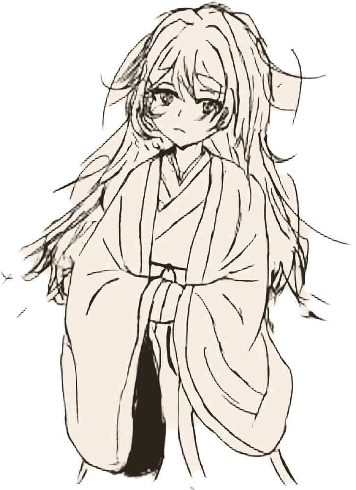

แตะเพื่ออ่านข้อความถัดไป
ได้รับคำสอนใหม่ · บันทึกลงสมุดแล้ว
จบเดโม
หลับตาครั้งนั้น คนึงฝันถึงขงจื้อ
那一次闔眼，魂牽夢縈的是孔子
เลขข้อหลุนอวี่อาจต่างกันเล็กน้อยตามฉบับที่ใช้อ้าง
วิธีเล่น
- แตะจอ คลิก หรือกด Space เพื่ออ่านต่อ
- ในฝัน ท่านอาจารย์จะสอนหลักคิดจากคัมภีร์หลุนอวี่ แต่ละข้อจะถูกเก็บลงสมุดคำสอน
- ตื่นมาในโลกจริง คุณต้องเลือกคำสอนจากสมุดไปแก้ปัญหา ผลมีสามแบบ ได้ผลดี ได้ครึ่งเดียว และใช้ผิดที่
- ถ้ายังไม่ใช่ จะมีคำอธิบายว่าทำไม แล้วเลือกใหม่ได้
- เดโมนี้มี 3 ปัญหา กับบทที่ 1 ตอนออกจากแคว้นหลู่ ใช้เวลาราว 20 นาที
那一次闔眼，魂牽夢縈的是孔子
หลับตาครั้งนั้น
คนึงฝันถึงขงจื้อ
เดโม · สามปัญหาในชีวิตประจำวัน กับคำสอนจากแดนไกล
เดโม 0.2